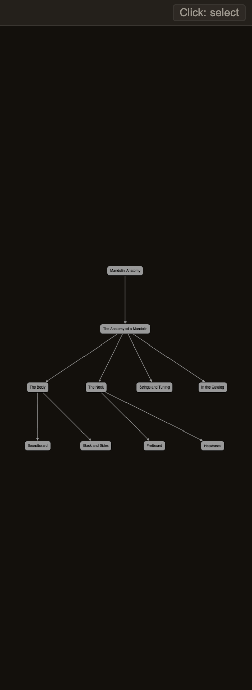

Docs/Right sidebar/Heading graph
Heading graph
The Heading graph panel draws your note's headings as a tree you can pan and click around — a starting node for the note itself, with each heading branching off the section that contains it. It shows the same headings as the Outline panel, just in a different shape: reach for it when you want to see how a long note branches at a glance instead of reading down a list.
How it works
The tree updates itself as you write. Each heading becomes a node, connected back to the section it sits inside, so your top-level sections fan out from the note and their subsections branch out one step further. Deeper headings are styled differently from top-level ones, so the tiers are easy to tell apart.

The lines here show which section contains which — nothing more. A link you type inside a heading doesn't connect it to anything; the tree only cares about how your headings nest.
Heading graph or Outline?
Both panels show the same headings for a note — they'll never disagree. The difference is just how they look: